『 Spark 』14. 一次 Spark SQL 性能提升10倍的经历
2016-12-13
写在前面
本系列是综合了自己在学习spark过程中的理解记录 ＋ 对参考文章中的一些理解 ＋ 个人实践spark过程中的一些心得而来。写这样一个系列仅仅是为了梳理个人学习spark的笔记记录，所以一切以能够理解为主，没有必要的细节就不会记录了，而且文中有时候会出现英文原版文档，只要不影响理解，都不翻译了。若想深入了解，最好阅读参考文章和官方文档。
其次，本系列是基于目前最新的 spark 1.6.0 系列开始的，spark 目前的更新速度很快，记录一下版本号还是必要的。
最后，如果各位觉得内容有误，欢迎留言备注，所有留言 24 小时内必定回复，非常感谢。
Tips: 如果插图看起来不明显，可以：1. 放大网页；2. 新标签中打开图片，查看原图哦；3. 点击右边目录上方的 present mode 哦。
Notes:
- 本篇开始，会渐渐的把版本升级到 2.0 上，后续的文章也会逐渐基于 2.0 来写；前面的文章就不改了，反正都是换汤不换药;
上一篇文章： 『 Spark 』13. Spark 2.0 Release Notes 中文版
1. 遇到了啥问题
是酱紫的，简单来说：并发执行 spark job 的时候，并发的提速很不明显。
嗯，且听我慢慢道来，啰嗦点说，类似于我们内部有一个系统给分析师用，他们写一些 sql，在我们的 spark cluster 上跑。随着分析师越来越多，sql job 也越来越多，等待运行的时间也越来越长，我们就在想怎么把 sql 运行的时间加快一点。我们的整个架构是 spark 1.6.1 on YARN 的，经过分析一些 sql 发现其实大多数分析语句都是比较简单的统计 sql，集群资源也还算多，一条简单的 sql 语句就把整个集群资源的坑占着略显不合适，有点飞机马达装到拖拉机上的赶脚，所以第一步，我们想，支持 spark job 的并行运行。
ok，初步方案有了，我们就做了如下几步改善工作：
-
首先设置
spark.scheduler.mode为FAIR模式，首先spark.scheduler.mode有FIFO,FAIR两种模式，FIFO是说提交的job，都是顺序执行的，后提交的 job 一定要等之前提交的 job 完全执行结束后才可以执行；FAIR是说，如果之前提交的 job 没有用完集群资源的话，后提交的job可以即刻开始运行。关于这点在官方文档上有详细的解释：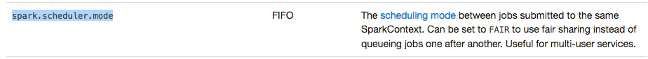
-
其次，我们生成了 10 个 pool，所谓的 pool，可以理解为资源池，或者通道。你可以在提交 job 的时候指定提交到哪个 pool 里面，可以简单的理解为我们把所有的集群资源分成 10 份，然后在提交 job 的时候指定在哪一份资源中运行这个 job。
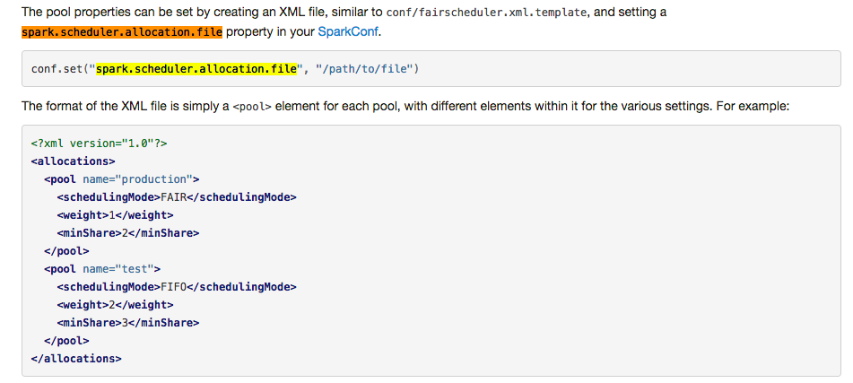
-
最后，我们在提交 job 的时候指定提交到的 pool 名字，只需要在提交 job 之前设置一个 sparkContext 的参数即可:
sc.setLocalProperty("spark.scheduler.pool", "your_pool_id")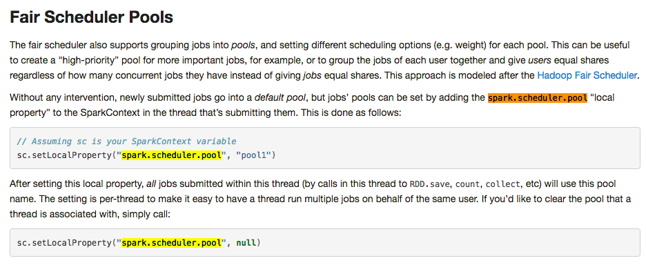
看似很简单，但能知道上面这些配置的也算是用 spark 比较熟练的人了吧，我迫不及待的测试了一下速度，发现了一个从古至今的大真理：理想很美好，现实很骨干啊。测试下来，发现多个 job 并行运行的时间并没有节省多少。
2. 原因排查
上面把问题说得很清楚了：多 job 并行的时候，运行速度并没有明显提升。但是原理上应该不会如此，只要一个 sql job 不需要全局所有集群资源，理论上来说会有较大提升的。下面是一组简单的数据对比：
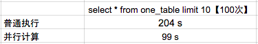
虽然看到，并行计算后时间只需要之前的 50%，但是这里需要说明一下，这个数据不够稳定的哦，比如说偶尔会新增 10来秒 这样子的。这里 暂且接受提升 50% 的速度这样一个结论吧。
但是，理论上来说，还能提升更多，不满足 50% 的提升效率，我们接着深度解读 spark web ui 上的一些分析数据，尝试找找能否把速度再度提升一下。终于找到了核心原因，下面我就把整个排查的过程详细记录下来：
-
找一个花费时间较长的 job，进去看看执行的详情，这里我们用 job id 为 796 的这个 job
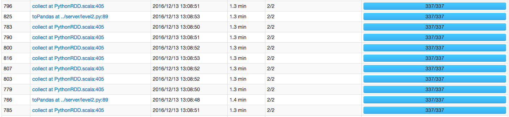
-
发现 job 796 有两个 stage，且有 99% 的时间都花在第一个 stage 1590 上了，而且需要注意的是，这个 stage 有 237.6mb 的数据读取，有可能需要经过网络从其他 hdfs 节点读过来，难道跟网络 I/O 有关？继续点进去看看。
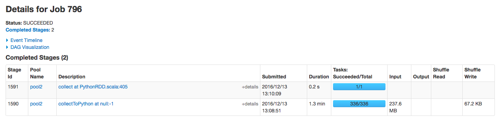
-
进来这个 stage 内部，似乎发现问题所在了，首先我们先关注下图中标记的几个点，可以总结出几个点：
- 首先，该 stage 内的所有任务在 executor 上真正执行的时间【可以理解为 cpu time】是 2s
- 其次，该 stage 内任务执行完成的时间是 1.1 m，大概是 66s，可以理解为【wall time】
- 该 stage 内所有的 task，
schedule delay的时间中位数是 0.5s，最大达到 1s【真正执行的时间也才 2s 哦】 - 该 stage 内一共有 336 个task
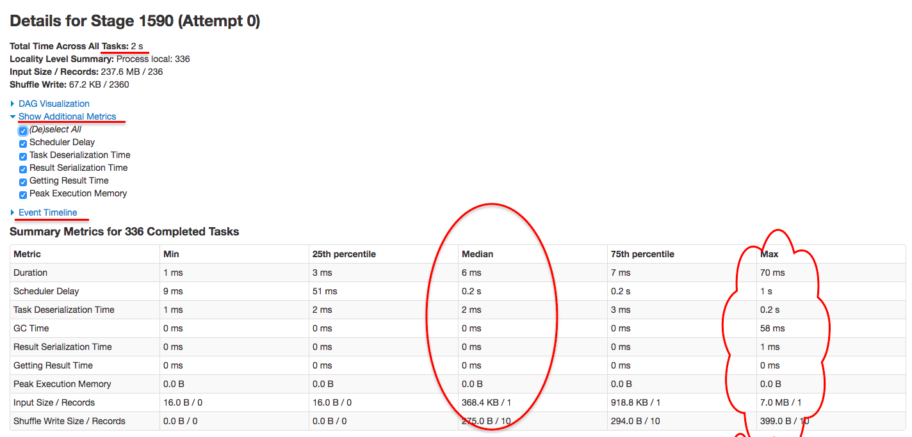 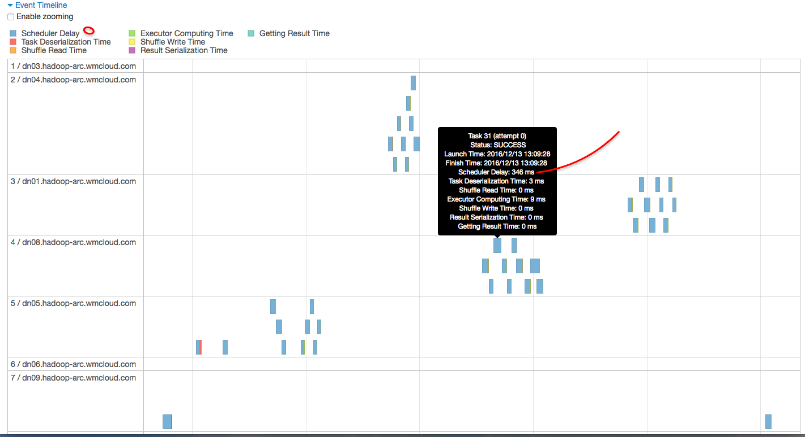
到这里，问题根源基本上已经知道了，即 job 796 的大多数时间都被消耗在 stage 1590 的 336 个task 的 secheduler delay 上面了。
3. 如何解决
上面问题几乎已经明确了，现在就该看看肿么解决了。我当时是这样去考虑的：
- 为什么 scheduler delay 会这么大
因为资源不够，要解决这个问题，似乎唯一的办法就是增加集群资源了。可是哥们，集群是你想加就能加的吗？那可是要砸钱的呀？而且如果公司缺机器的话，想加集群资源也要经过 申请->审批->采购->分配->集群配置 大大小小几个阶段，说不一定等你找到女朋友了都还没搞定啊。
当时想着加资源这个方案短期不可取后，有那么几分钟是觉得有点烧脑的。我就静静的看着 web ui，心里在算，一个 task 如果平均 scheduler delay 0.5s 的话，这 336 个 task 就得 delay 118 秒，基本上都到 2 分钟了。这 delay 的时间可真够长的啊，就在算这个数值的时候，突然想到这样一个公式：total delay time = average delay time * task number。现在我们的问题是要解决 total delay time，那完全可以从两方面去解决呀：
- 降低 average delay time：目前来看似乎唯一的方法是砸钱加资源
- 降低 task 数：粗略来看，简单的降低 task 数的话，应该是能减少 total delay time 的，但是如果task 数降低了，意味着每个 task 需要处理的数据量就多了，那其他的时间应该是会增加一些的，比如说
Task Deserialization Time, Result Serialization Time, GC Time, Duration等。减少 task 数究竟能不能提高整体运行速度，似乎乍一看还真不好确定。
反正砸钱加资源这个方案暂时是行不通的，要不就再仔细分析一下降低task数这个方案。这里我们在仔细参考一下下图中这一列指标：
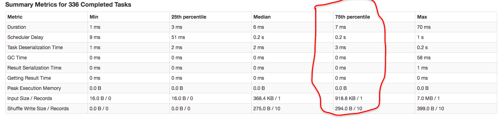 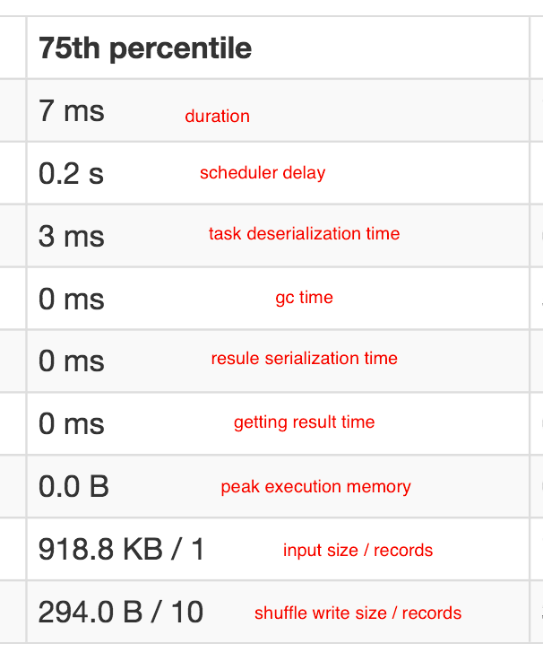
我们用 75 分位的统计数据来做一个假设：假设我们把每一个 task 的数据量加 10 倍，那么预计的 task metrics 75 分位大概是一个什么样的数值，假设这些指标都是线性增长的话：
- Duration: 扩大到 10 倍，14ms
- Scheduler Delay: 这个指标不用估计
- Task Deserialization Time: 扩大到 10 倍，6ms
- GC Time: 扩大到 10 倍，最多1ms
- Result Serialization Time: 扩大到 10 倍，最多1ms
- Getting Result Time: 扩大到 10 倍，最多1ms
- Peak Execution Memory: 扩大到 10 倍，最多 1b
- Input Size / Records: 扩大到 10 倍，918.8 KB * 2 / 2
- Shuffle Write Size / Records 0: 扩大到 10 倍，294.0 B * 2/ 20
可以看到，这样大概估计下来，除去 Scheduler Delay 的时间，其实其他时间也没消耗多少，都是毫秒级的，看起来应该是完全可行的呀。
正准备这样测试的时候，我忽然想到，为什么现在的 metrics 统计是这样的结构的啊，这么多 task？一般来说，一个 task 对应到 hdfs 上的一个 parquet 文件【该项目中所有数据文件都是用 parquet 压缩后存储到 hdfs 上的】，难道是现在存在 hdfs 上的 parquet 文件个数过多，每个文件太小？突然有一种恍然大悟的感觉，赶紧看看现在 hdfs 上文件的结构，如下所示：
taotao@mac007:~/Desktop/dyes/git-mercury/mercury-computing$hadoop fs -ls -h hdfs://hadoop-archive-cluster/hfmkt/level2/datayes/parquet/20161117/20161117_Transaction_SZ | cat -n | tail
317 -rw-r--r-- 3 taotao hfmkt 1.3 M 2016-11-17 16:37 hdfs://hadoop-archive-cluster/hfmkt/level2/datayes/parquet/20161117/20161117_Transaction_SZ/part-r-00310-38d7cc53-60d2-40b3-a945-0cb5832f30de.gz.parquet
318 -rw-r--r-- 3 taotao hfmkt 1.4 M 2016-11-17 16:37 hdfs://hadoop-archive-cluster/hfmkt/level2/datayes/parquet/20161117/20161117_Transaction_SZ/part-r-00311-38d7cc53-60d2-40b3-a945-0cb5832f30de.gz.parquet
319 -rw-r--r-- 3 taotao hfmkt 2.9 M 2016-11-17 16:37 hdfs://hadoop-archive-cluster/hfmkt/level2/datayes/parquet/20161117/20161117_Transaction_SZ/part-r-00312-38d7cc53-60d2-40b3-a945-0cb5832f30de.gz.parquet
320 -rw-r--r-- 3 taotao hfmkt 1.2 M 2016-11-17 16:37 hdfs://hadoop-archive-cluster/hfmkt/level2/datayes/parquet/20161117/20161117_Transaction_SZ/part-r-00313-38d7cc53-60d2-40b3-a945-0cb5832f30de.gz.parquet
321 -rw-r--r-- 3 taotao hfmkt 1.9 M 2016-11-17 16:37 hdfs://hadoop-archive-cluster/hfmkt/level2/datayes/parquet/20161117/20161117_Transaction_SZ/part-r-00314-38d7cc53-60d2-40b3-a945-0cb5832f30de.gz.parquet
322 -rw-r--r-- 3 taotao hfmkt 1.7 M 2016-11-17 16:37 hdfs://hadoop-archive-cluster/hfmkt/level2/datayes/parquet/20161117/20161117_Transaction_SZ/part-r-00315-38d7cc53-60d2-40b3-a945-0cb5832f30de.gz.parquet
323 -rw-r--r-- 3 taotao hfmkt 899.4 K 2016-11-17 16:37 hdfs://hadoop-archive-cluster/hfmkt/level2/datayes/parquet/20161117/20161117_Transaction_SZ/part-r-00316-38d7cc53-60d2-40b3-a945-0cb5832f30de.gz.parquet
324 -rw-r--r-- 3 taotao hfmkt 2.3 M 2016-11-17 16:37 hdfs://hadoop-archive-cluster/hfmkt/level2/datayes/parquet/20161117/20161117_Transaction_SZ/part-r-00317-38d7cc53-60d2-40b3-a945-0cb5832f30de.gz.parquet
325 -rw-r--r-- 3 taotao hfmkt 1.0 M 2016-11-17 16:37 hdfs://hadoop-archive-cluster/hfmkt/level2/datayes/parquet/20161117/20161117_Transaction_SZ/part-r-00318-38d7cc53-60d2-40b3-a945-0cb5832f30de.gz.parquet
326 -rw-r--r-- 3 taotao hfmkt 460.9 K 2016-11-17 16:37 hdfs://hadoop-archive-cluster/hfmkt/level2/datayes/parquet/20161117/20161117_Transaction_SZ/part-r-00319-38d7cc53-60d2-40b3-a945-0cb5832f30de.gz.parquet可以看到，现在有 300 多个文件【上面只是一部分，还有十几个在另外一个文件夹里，一个 sql 会统计两个文件夹里的数据文件】，而且我仔细看了一下，每个文件大小最小的有很多 1kb 的，最大的有 2.9mb 的。难怪了，原来核心根源在这里。再结合上面关于 metrics 的分析，我心里大概确信了，只要把 parquet 文件的问题解决就行了，方法就是压缩 parquet 文件个数，控制每个 parquet 文件的大小即可。
方法确定了，那就干咯。
4. 效果对比
未来方便对比，我把 20161212 的数据文件处理了一下，保留 20161117 这天的数据文件【20161212 的数据文件整体上比 20161117 的数据文件要多 10%】，下面是对比结果：
parquet 文件个数
- 20161117 这天
taotao@mac007:~/Desktop/dyes/git-mercury/mercury-computing$hadoop fs -ls -h hdfs://hadoop-archive-cluster/hfmkt/level2/datayes/parquet/20161117/20161117_Transaction_S* | cat -n | tail -n 5
342 -rw-r--r-- 3 taotao hfmkt 1.7 M 2016-11-17 16:37 hdfs://hadoop-archive-cluster/hfmkt/level2/datayes/parquet/20161117/20161117_Transaction_SZ/part-r-00315-38d7cc53-60d2-40b3-a945-0cb5832f30de.gz.parquet
343 -rw-r--r-- 3 taotao hfmkt 899.4 K 2016-11-17 16:37 hdfs://hadoop-archive-cluster/hfmkt/level2/datayes/parquet/20161117/20161117_Transaction_SZ/part-r-00316-38d7cc53-60d2-40b3-a945-0cb5832f30de.gz.parquet
344 -rw-r--r-- 3 taotao hfmkt 2.3 M 2016-11-17 16:37 hdfs://hadoop-archive-cluster/hfmkt/level2/datayes/parquet/20161117/20161117_Transaction_SZ/part-r-00317-38d7cc53-60d2-40b3-a945-0cb5832f30de.gz.parquet
345 -rw-r--r-- 3 taotao hfmkt 1.0 M 2016-11-17 16:37 hdfs://hadoop-archive-cluster/hfmkt/level2/datayes/parquet/20161117/20161117_Transaction_SZ/part-r-00318-38d7cc53-60d2-40b3-a945-0cb5832f30de.gz.parquet
346 -rw-r--r-- 3 taotao hfmkt 460.9 K 2016-11-17 16:37 hdfs://hadoop-archive-cluster/hfmkt/level2/datayes/parquet/20161117/20161117_Transaction_SZ/part-r-00319-38d7cc53-60d2-40b3-a945-0cb5832f30de.gz.parquet- 20161212 这天
taotao@mac007:~/Desktop/dyes/git-mercury/mercury-computing$hadoop fs -ls -h hdfs://hadoop-archive-cluster/hfmkt/level2/datayes/parquet/20161212/20161212_Transaction_S* | cat -n | tail -n 5
34 -rw-r--r-- 3 taotao hfmkt 19.2 M 2016-12-12 15:49 hdfs://hadoop-archive-cluster/hfmkt/level2/datayes/parquet/20161212/20161212_Transaction_SZ/part-r-00013-686bbce5-a7a1-4b5d-b25c-14cd9ddae283.gz.parquet
35 -rw-r--r-- 3 taotao hfmkt 10.7 M 2016-12-12 15:49 hdfs://hadoop-archive-cluster/hfmkt/level2/datayes/parquet/20161212/20161212_Transaction_SZ/part-r-00014-686bbce5-a7a1-4b5d-b25c-14cd9ddae283.gz.parquet
36 -rw-r--r-- 3 taotao hfmkt 26.0 M 2016-12-12 15:49 hdfs://hadoop-archive-cluster/hfmkt/level2/datayes/parquet/20161212/20161212_Transaction_SZ/part-r-00015-686bbce5-a7a1-4b5d-b25c-14cd9ddae283.gz.parquet
37 -rw-r--r-- 3 taotao hfmkt 20.1 M 2016-12-12 15:49 hdfs://hadoop-archive-cluster/hfmkt/level2/datayes/parquet/20161212/20161212_Transaction_SZ/part-r-00016-686bbce5-a7a1-4b5d-b25c-14cd9ddae283.gz.parquet
38 -rw-r--r-- 3 taotao hfmkt 8.7 M 2016-12-12 15:49 hdfs://hadoop-archive-cluster/hfmkt/level2/datayes/parquet/20161212/20161212_Transaction_SZ/part-r-00017-686bbce5-a7a1-4b5d-b25c-14cd9ddae283.gz.parquet100个job并发执行时间
- 20161117 这天：99s
- 20161212 这天：16s
Spark Web UI 上一个 job 对比
- 20161117 这天
- 20161212 这天
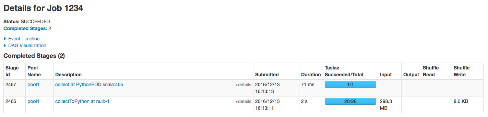 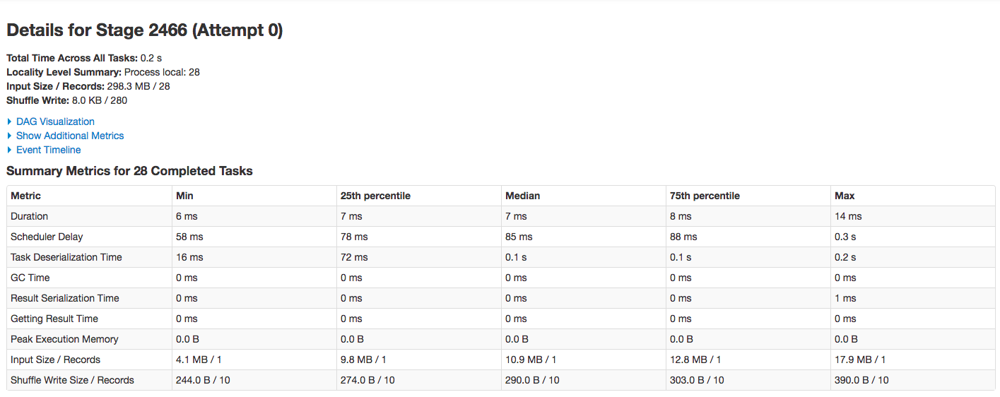 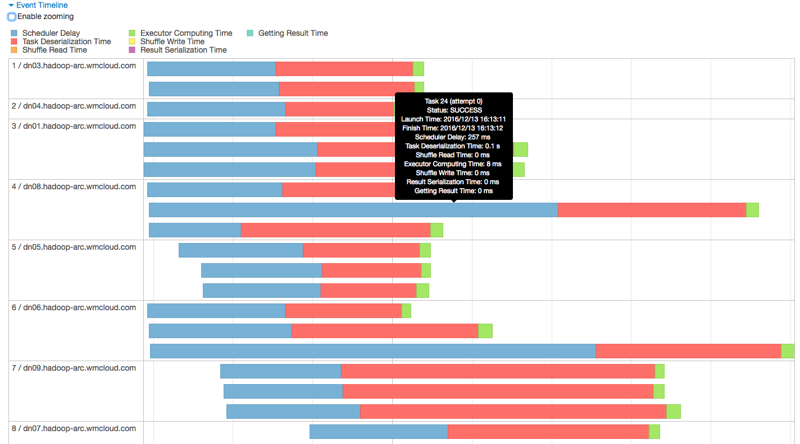
5. 总结
首先，需要说明的是，这次优化应该还有提升的空间，虽然优化后整体从 204s 到 99s 再到 16s，提升了十倍多，确实很大，但是最后我们还是发现 16s 的情况下，scheduler delay 和 Task Deserialization Time 还是有占用了大部分时间，这里我觉得不能一味的在文件个数和大小上下功夫了。需要考虑到用户场景来做一个权衡。所以越到后期的优化，越考验产品功能的设计，当然这是后话了，就不在本文范围内讨论。
其次，这次优化，从发现问题，追根溯源，到最后解决问题，大概花了 1 小时，基本上还算不错。通过这次排查，还是真心感受到 spark 设计的完善，不得不说，作为一个开源项目，spark 最大的特点，我觉得应该是 spark 是由一帮非程序员设计实现的，而是一帮由程序员，架构师，产品经理组合起来一起干的，更像是一个产品，而不是一个开源项目。怪不得这帮人要去开个公司【databricks：我最看好的公司之一】，看来真的是 born this way。说到这，不得不感触一下，对比 spark 这帮人，现实中真的有太多指令式程序员了，老板叫干嘛就干嘛，丝毫不关注产品功能，未来发展，甚至很多工程师都不用自己开发的产品。我不知道这样的人是怎么想的，反正我自己觉得这样挺可怜的。
最后，好久都没写 spark 相关的文章了，距离上一片水文过去整整两个月了。最近两个月真心累成狗了，要做好项目，关注竞品的发展，行业动态；还要经常出去拜访客户，维护客户；同时也要做好产品未来几个月甚至几个季度的规划，偶尔还要搞搞运营啥的。文章写少了，但视野真心见长了，anyway，未来再接着抽空多记录点文字下来，哈哈。
6. 打开微信，扫一扫，点一点，棒棒的，^_^

参考文章
- Apache Parquet
- scheduling-within-an-application
- configuration scheduling
- job-scheduling.html configuring-pool-properties
- Spark使用CombineTextInputFormat缓解小文件过多导致Task数目过多的问题
- The Small Files Problem
- Parquet file merging or other optimisation tips
- Data Storage Tips for Optimal Spark Performance
本系列文章链接
- 『 Spark 』1. spark 简介
- 『 Spark 』2. spark 基本概念解析
- 『 Spark 』3. spark 编程模式
- 『 Spark 』4. spark 之 RDD
- 『 Spark 』5. 这些年，你不能错过的 spark 学习资源
- 『 Spark 』6. 深入研究 spark 运行原理之 job, stage, task
- 『 Spark 』7. 使用 Spark DataFrame 进行大数据分析
- 『 Spark 』8. 实战案例 ｜ Spark 在金融领域的应用 ｜ 日内走势预测
- 『 Spark 』9. 搭建 IPython + Notebook + Spark 开发环境
- 『 Spark 』10. spark 应用程序性能优化｜12 个优化方法
- 『 Spark 』11. spark 机器学习
- 『 Spark 』12. Spark 2.0 特性介绍
- 『 Spark 』13. Spark 2.0 Release Notes 中文版
- 『 Spark 』14. 一次 Spark SQL 性能优化之旅